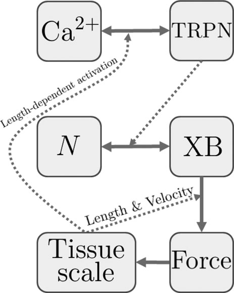

This model is known to run in OpenCell and COR to reproduce the output shown in the publication. The units have been checked and they are consistent.
The amount of force generated by heart cells is strongly influenced by feedback from the deformation of cardiac tissue, both from the changes in cell length and the rate at which cells are stretched. We analysed the effect these cellular mechanisms have on whole heart function by making a computational model of mouse heart cells, and embedding this cellular model into a representation of the heart. Unlike previous murine models, this model represents the heart at both body temperature and the high heart rates seen in these animals, allowing us to directly compare results from our computational model with experimental measurements. Results show that effects from the rate of stretch are especially important for explaining the large differences observed between force generated by isolated cells and pressure measured experimentally. The model also provides an important framework for future research focused on interpreting results from genetic manipulation experiments in mice.
|  |
| Cell model overview: Calcium binds to troponin C (TRPN) in a cooperative way. This increases XB, the fraction of actively cycling crossbridges. Length and velocity dependencies are added to calculate the force generated, which is used at the tissue scale. |
The original publication reference is cited below:
An analysis of deformation-dependent electromechanical coupling in the mouse heart. Land S, Niederer SA, Aronsen JM, Espe EK, Zhang L, Louch WE, Sjaastad I, Sejersted OM, Smith NP. 2012 J Physiol. 2012 Sep 15;590(Pt 18):4553-69. Epub 2012 May 21. PubMed ID: 22615436